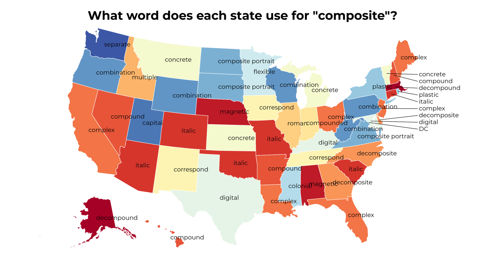

Fact maps!
2018-4-25 11:19:16
What do the states think of data?
2018-4-25 10:19:17
What do the states think of loners?
2018-4-25 09:19:19
Favorite Sporting Kansas City players by state
2018-4-25 08:19:16
Favorite Senate of Serampore College (University) faculty by state
2018-4-25 07:19:17
What word does each state use for "scruple"?
2018-4-25 06:19:15
What do the states think of simulators?
2018-4-25 05:19:16

What word does each state use for "composite"?
5
|
4
|
3
|
2
|
1
|
0